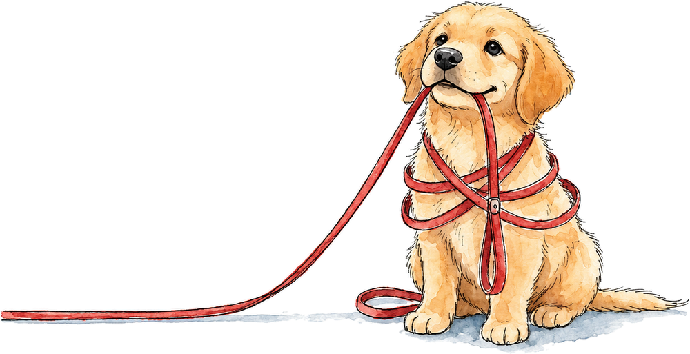
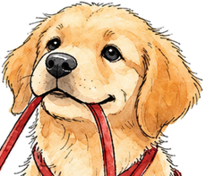
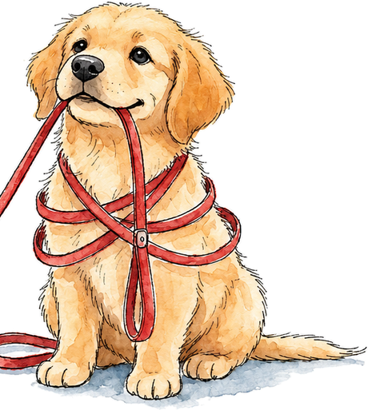

Hi, I'm Joan!
I turn messy processes into clear products.
I'm a Product Manager who maps how work really happens, then gives engineers clear flow and UI feedback to build from. Grad student at U-M School of Information, incoming PM Intern at Altheros Capital.
mess in, clear flow out


Selected work
four messes, four flows
U-M Office of the VP for Research
AI Workflow for Funding Calls
Turned 30-page funding calls into setup-ready data with a human-in-the-loop AI tool, at 97.4% field accuracy.
MHacks 2026
Free-Food Map for Campus
Found that only 3 of 80 catered events said "free food," then designed a live map to rescue leftovers in one weekend.
Business+Tech · Care Pilots
Drone Medicine Delivery
Connected rural patients, pharmacies and drone companies, and shipped a working MVP of three apps in six weeks.
Beyond Code Collective · In progress
Learner Attendance Research
About 83% of sign-ups never made it to the live workshop. Walking the learner journey to find where they slip away.
How I work
tap a step to see it in action
{{cur.stat}}
{{cur.statLabel}}
a little about me
In every job, I ended up fixing the process.
I started in audit at EY, building audit working papers from scratch on a first-year engagement. Then finance at LVMH, IT systems at eCloudvalley, and sales operations at Uber, where I cut weekly Salesforce tickets by 95% during an APAC rollout.
Different titles, same pattern: find where the work breaks, talk to the people stuck in it, and make it simple. That pattern led me to product management, and to the University of Michigan School of Information.
Education
University of Michigan, School of Information
Master's, School of Information · Product Management · 2026–2028
National Central University, Taiwan
BBA, Business Administration and Finance (double major) · GPA 3.9, top 5%
Oil paintings
Watercolor illustration
Yoga & Pilates
My own stock dashboard
中文 · English
Experience
tap a role to see the mess I fixed
{{job.company}} · {{job.place}}
{{job.stat}}
{{job.statLabel}}
{{job.messLine}}
- {{b}}
{{job.detail}}
Field notes
What I learn from talks, projects and books, and what I do with it.
fetched for you

latest · November 2026
Saw it, solved it: five things a unicorn founder taught me
A writer-turned-founder on daily discipline, picking up the phone, and hiring people who know more than you. Plus how I'm using each lesson.
read the note →
Got a messy process? Let's untangle it.
Hiring for a PM role, or need help with process mapping, PRDs or UX flow reviews? I'd love to hear from you.
